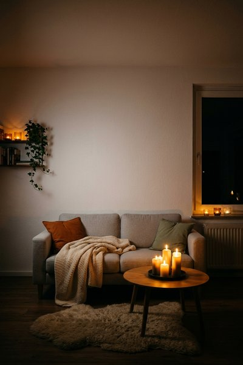
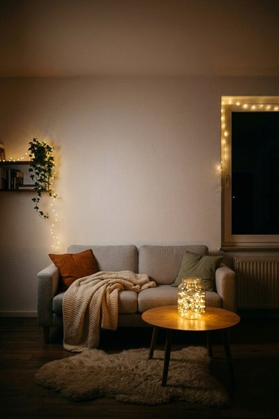
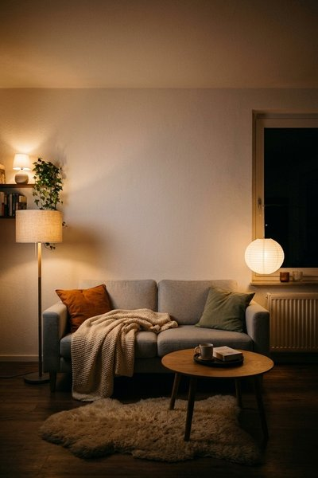

Hygge im Winter: 3 Lichtstimmungen im Vergleich
Derselbe Raum, dreimal anders beleuchtet. Licht ist der schnellste und günstigste Weg zu einem gemütlichen Wohnzimmer – vor allem im Winter, wenn es ab 16:30 Uhr dunkel ist. Hier siehst du, wie die drei Varianten wirken und was sie kosten.



1. Nur Kerzenlicht
Alle Lampen aus, sechs bis zehn Kerzen in verschiedenen Höhen: Stumpenkerzen auf einem Tablett, Teelichter in Bernsteingläsern auf Regal und Fensterbank. Das ist die klassische Hygge-Stimmung – warm, flackernd, ruhig.
Vorteile: die gemütlichste Stimmung, sehr günstig, Kerzen duften auf Wunsch.
Nachteile: zu dunkel zum Lesen, offenes Feuer (nie unbeaufsichtigt lassen, nicht neben Vorhängen), Ruß an der Decke. Echtwachs-LED-Kerzen mit Timer sind die sichere Alternative.
ca. 15–30 € (Kerzen + Gläser + Tablett), LED-Kerzen ca. 20–40 €
2. Lichterketten
Warmweiße Micro-LED-Lichterketten: eine locker über das Wandregal, eine in einem großen Glas auf dem Tisch, eine oben am Fenster. Viele kleine Lichtpunkte, etwas heller und gleichmäßiger als Kerzen.
Vorteile: sicher, mit Batterie und Timer ohne Kabelsalat, wirkt verspielt, kostet im Betrieb fast nichts.
Nachteile: allein zu wenig Licht für den ganzen Abend, kalt-weiße Ketten wirken billig – unbedingt „warmweiß“ (ca. 2200–2700 K) kaufen.
ca. 15–35 € für 3 Lichterketten + Glas
3. Mix aus warmen Lampen
Deckenlicht aus, dafür drei Lampen auf verschiedenen Höhen: eine Stehlampe mit Leinenschirm neben dem Sofa, eine kleine Tischlampe im Regal und eine Papierleuchte tief in der Ecke. Ruhiges, gleichmäßiges Licht, hell genug zum Lesen.
Vorteile: alltagstauglich, man kann lesen und spielen, wirkt hochwertig.
Nachteile: teurer am Anfang, braucht Steckdosen an den richtigen Stellen.
ca. 60–150 € für 3 Lampen + Glühbirnen
Vergleich auf einen Blick
| Kerzen | Lichterkette | Lampen-Mix | |
|---|---|---|---|
| Kosten | 15–30 € | 15–35 € | 60–150 € |
| Gemütlichkeit | sehr hoch | hoch | hoch |
| Hell genug zum Lesen | nein | nein | ja |
| Sicherheit | offenes Feuer | sicher | sicher |
| Laufende Kosten | neue Kerzen | Batterien/Strom, gering | Strom, gering |
Richtwerte für Deutschland, Stand November 2026. Die Preise schwanken je nach Händler und Saison.
Welche Lichtstimmung passt zu dir?
Für besondere Abende: Kerzen – oder LED-Kerzen, wenn Kinder oder Katzen im Haus sind.
Für wenig Geld und ohne Risiko: Lichterketten.
Für jeden Tag: der Lampen-Mix. Am schönsten: Lampen als Grundlicht, dazu eine Lichterkette oder ein paar LED-Kerzen.
Häufige Fragen
Welche Lichtfarbe ist gemütlich?
Warmweiß mit 2200–2700 Kelvin. Die Angabe steht auf jeder Glühbirnen-Packung. Alles über 3000 K wirkt im Wohnzimmer kühl.
Warum das Deckenlicht ausschalten?
Licht von oben macht harte Schatten und wirkt wie im Büro. Mehrere kleine Lichtquellen auf Augenhöhe und darunter machen einen Raum gemütlich.
Und auf dem Balkon?
Draußen funktionieren Lichterketten und LED-Laternen am besten: Lichterketten auf dem Balkon.